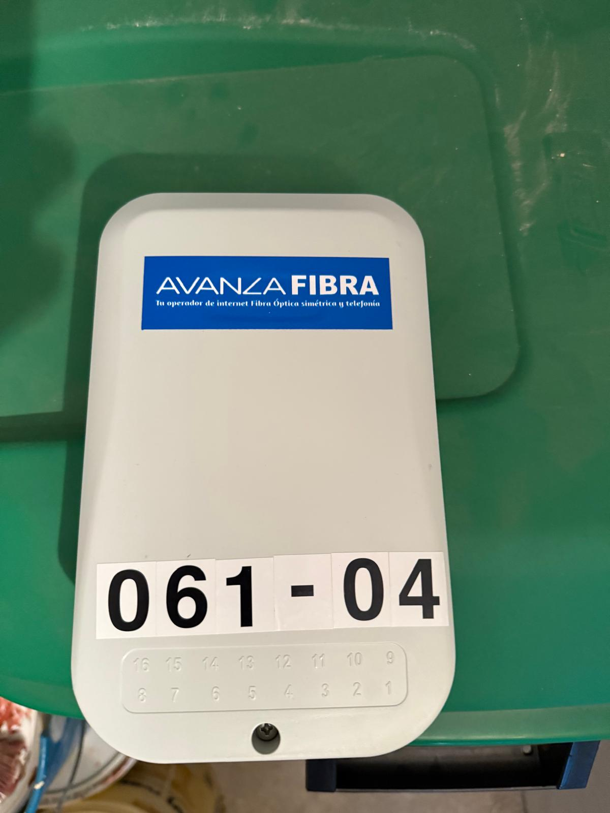
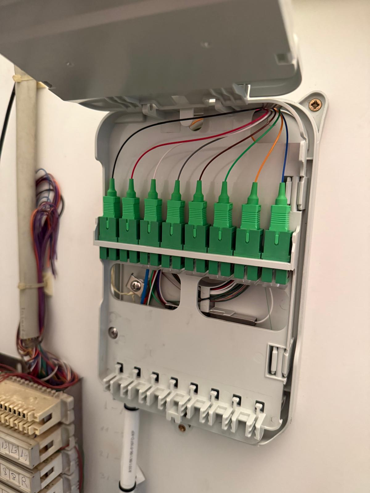
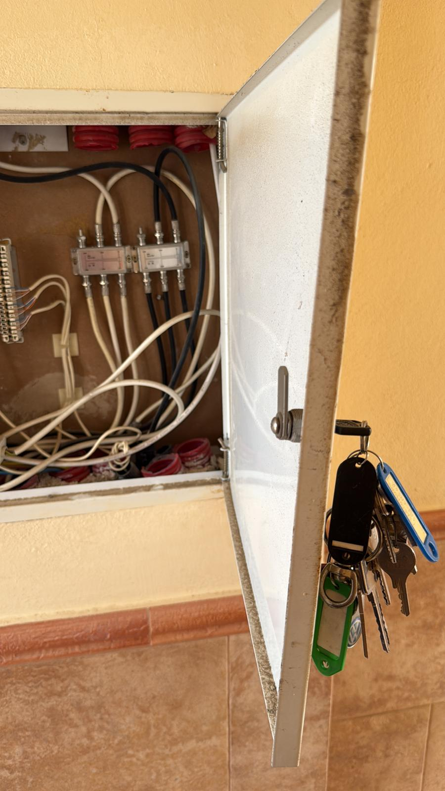
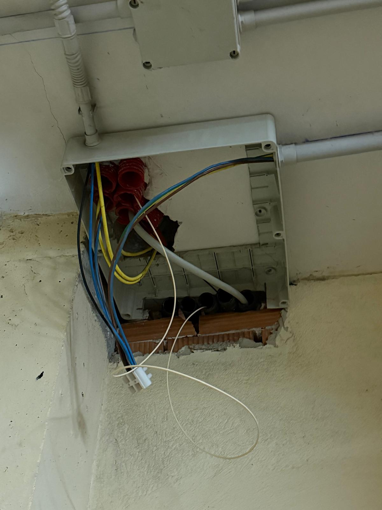

Internet & Telecom
Information about internet infrastructure, fiber connections, routers, and provider details.
Provider Details
- Company: Avanza Fibra
- Local Office: Calle del Mar, 54, 04620 Vera (Almería)
- Phone (Customer Service / Support): +34 968 19 18 38
- Official Website: www.avanzafibra.com
- Connection Type: Fiber Optic (FTTH)
- Splitter Capacity: 1:8 Splitter Box (Up to 8 active users)
Fiber Installation Guide (For Technicians)
Follow these steps and references for deploying a new subscriber fiber line in the building:
-
Accessing the Main Technical Room:
The fibers enter the building at the end of the underground garage (-1 floor). The room is locked. Keys are held by Rudi (App 3B, Mobile: +32488421402) or Francisca (App 3A|4A, WhatsApp only: +34677549202). -
Connecting to the Splitter Box:
On the right wall of the technical room, the fiber splitter boxes are located. Avanza Fibra utilizes a 1:8 splitter box. (See Photo 1 & 2) -
Routing from the Floor Cabinets:
The easiest deployment path starts at the technical cabinet located on each floor (behind the white square door on the left wall next to the elevator). Note: The cabinet doors on the 2nd and 3rd floors are currently broken. Once repaired, the key will be located in the new keybox in the underground garage. -
Pulling the Cable Downward:
The technician must route the fiber patch cable from the floor cabinet down to the -1 garage floor. Open the white box on the ceiling located to the left of the elevator (See Photo 4). From this point, the cable path directly enters the main technical room containing the splitter boxes. -
Connecting inside the Apartment:
The subscriber-side end of the fiber goes directly into the apartment. It enters via the hidden technical cabinet situated close to the apartment's front door (See Photo 3).
Installation Reference Photos

Photo 1: Main Tech Room - Splitter Box (Closed)

Photo 2: Avanza 1:8 Splitter (Open Dashboard)

Photo 3: Floor Technical Cabinet & Apartment Entry Point

Photo 4: White Distribution Box on Garage Ceiling (-1, near Elevator)